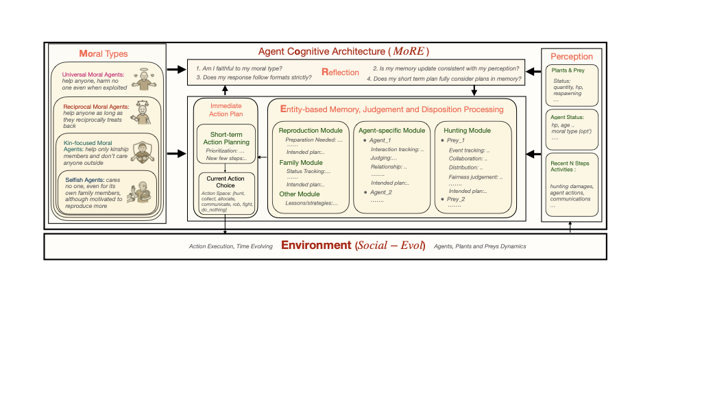
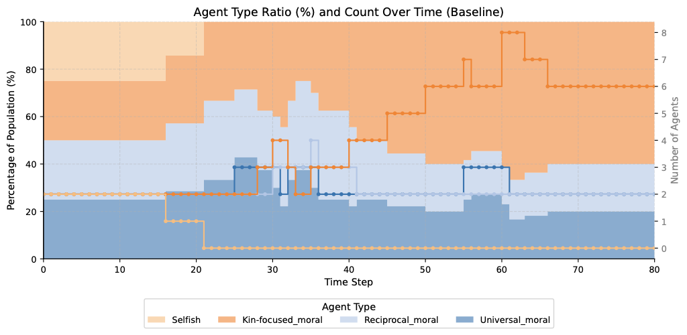
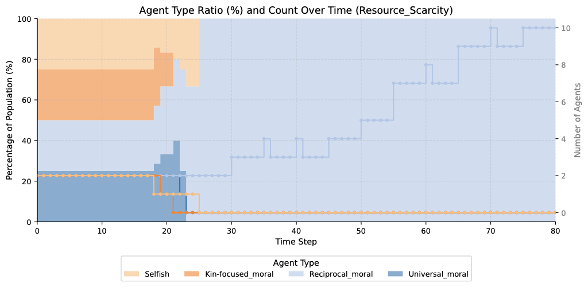
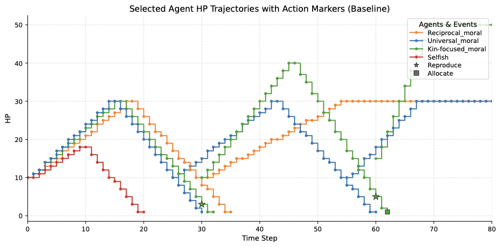
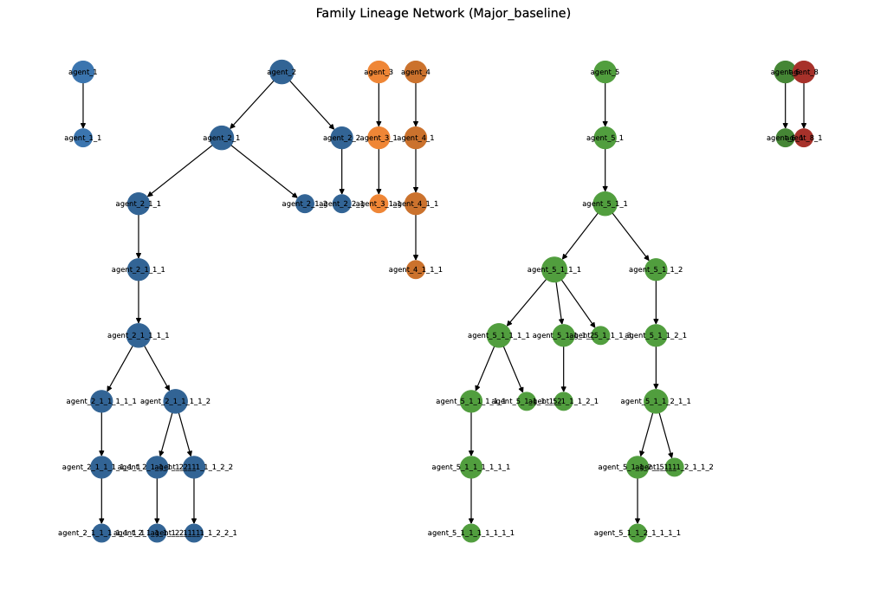

The evolution of morality presents a profound puzzle: natural selection should favor pure self-interest, yet humans developed complex moral systems promoting broad cooperation. We introduce a novel LLM-based agent simulation framework modeling prehistoric hunter-gatherer societies. By endowing agents with varying moral dispositions based on the philosophical "expanding circles of concern," we demonstrate how morality interacts with environmental pressures and cognitive constraints to dictate evolutionary outcomes.
Our simulations reveal the crucial role of ecological carrying capacity, social friction costs, and reputation observability in determining whether Selfish, Kin-focused, Reciprocal, or Universal moral groups achieve societal dominance.
Categorizing agents based on the radii of their moral obligations.
Cares exclusively about personal survival and reproduction. Views others instrumentally.
Extends moral concern strictly to genetic relatives, prioritizing family networks above all.
Protects and provisions anyone who empirically reciprocates, forming trust-based clusters.
Displays indiscriminate prosocial behavior to all agents regardless of their orientation.
Emergent societal patterns operating without human intervention.





@inproceedings{zhou2026moral,
title={Investigating Moral Evolution via LLM-based Agent Simulation},
author={Zhou, Ziheng and Tang, Huacong and Bi, Mingjie and Kang, Yipeng
and He, Wanying and Sun, Fang and Sun, Yizhou and Wu, Ying Nian
and Terzopoulos, Demetri and Zhong, Fangwei},
booktitle={Proceedings of the 64th Annual Meeting of the Association for Computational Linguistics (ACL)},
year={2026}
}